Session: 20260302_151416_capture
Duration: 53.874 s | Total frames: 1305 | FPS: 24.22
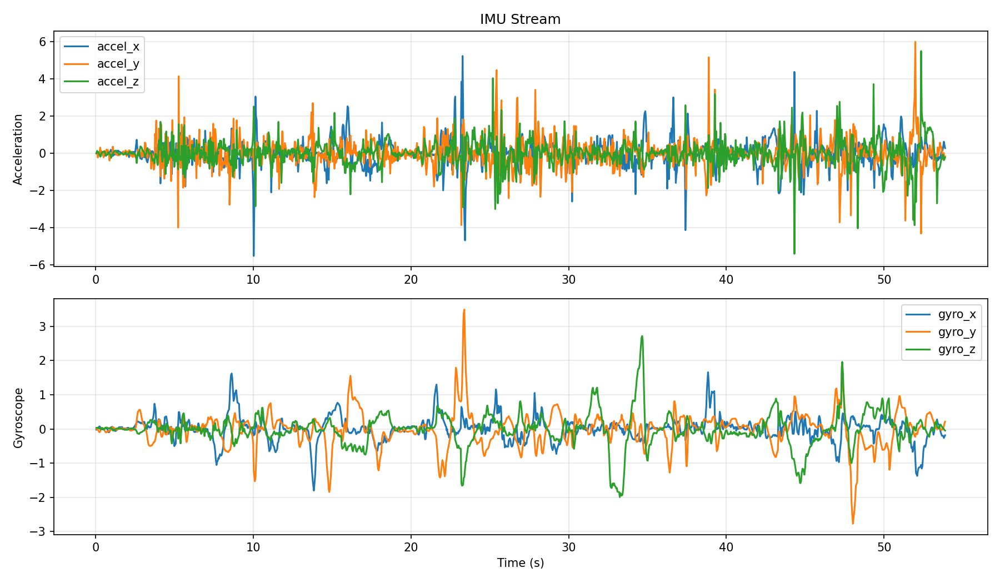
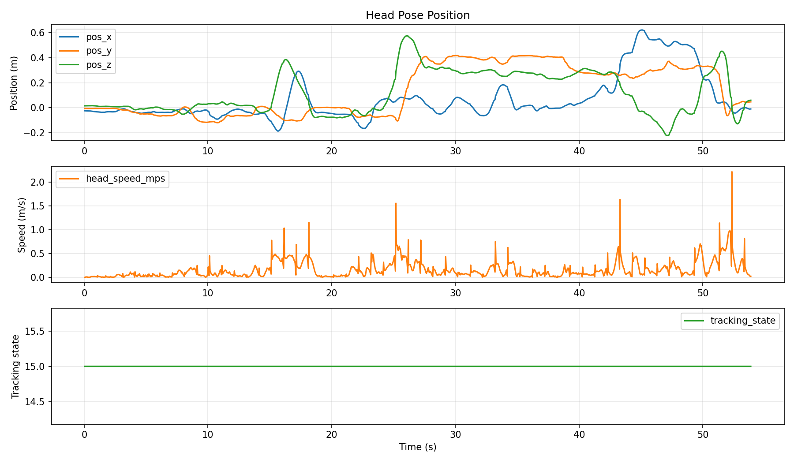
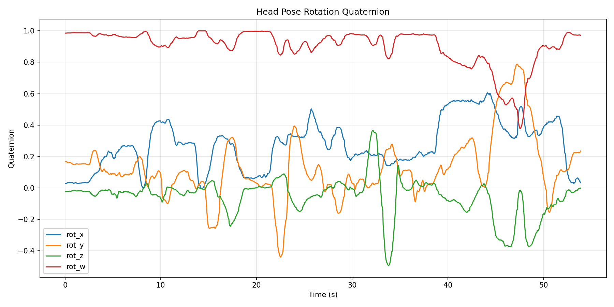
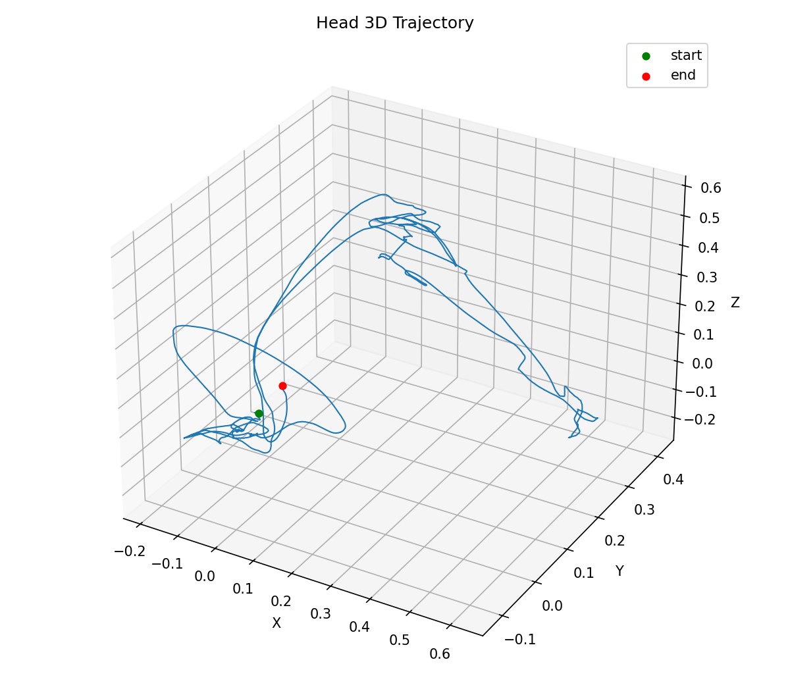
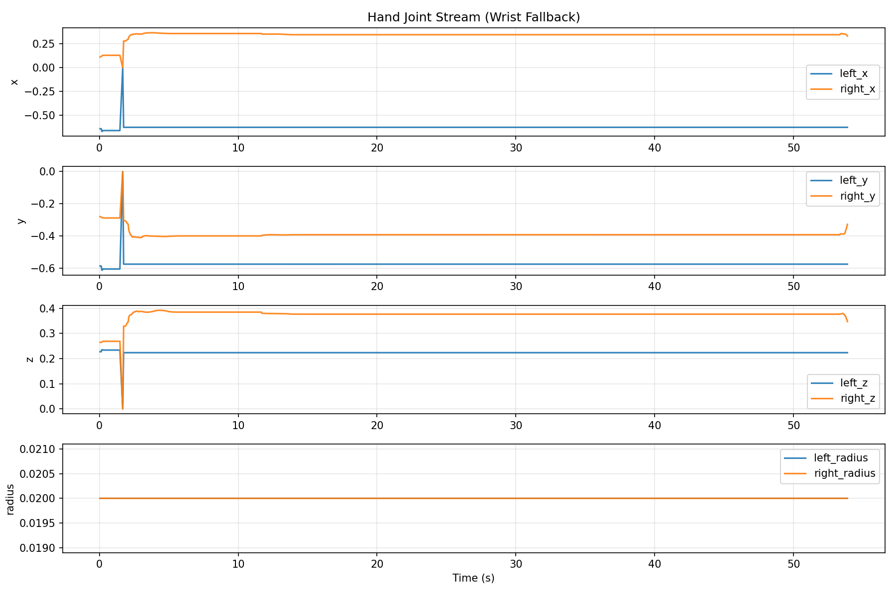
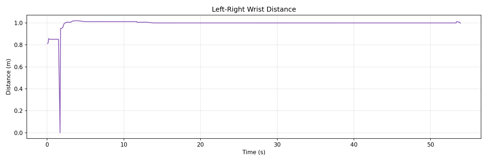
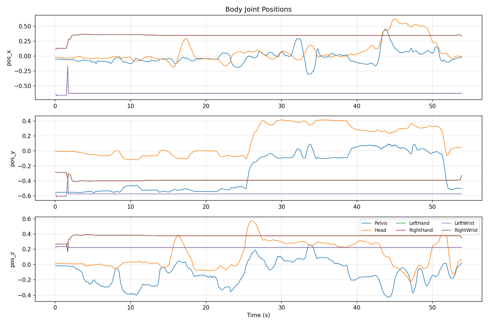
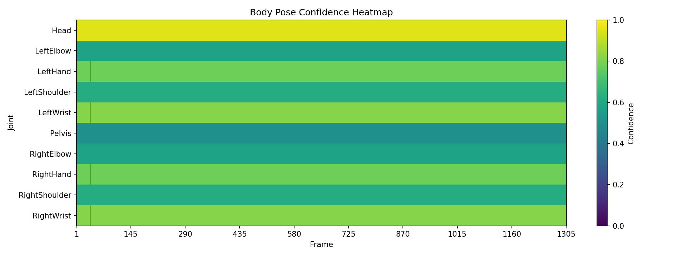
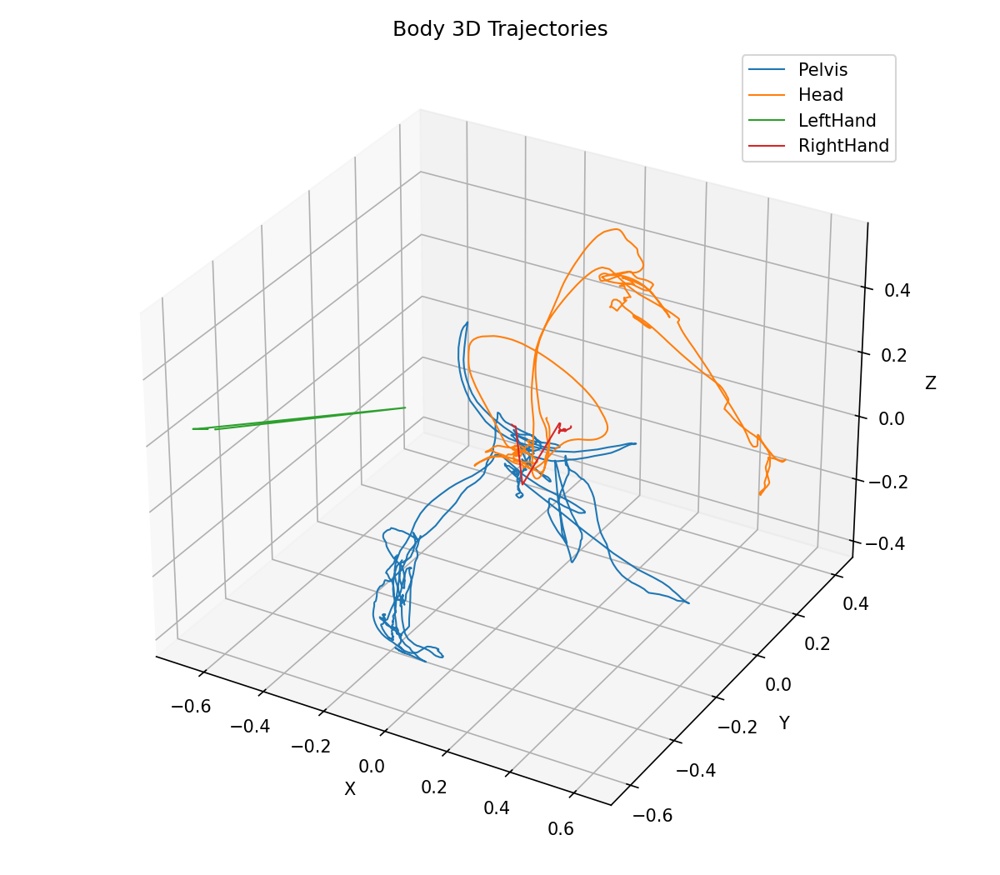
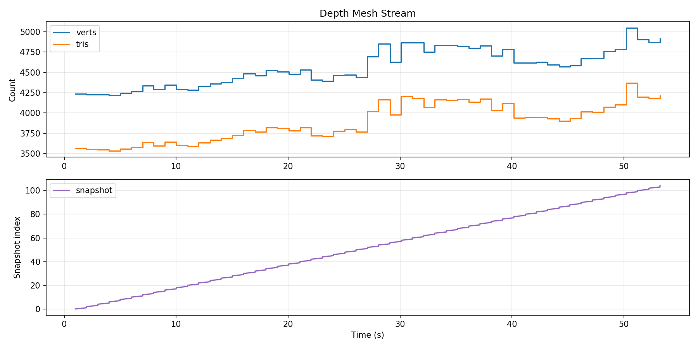
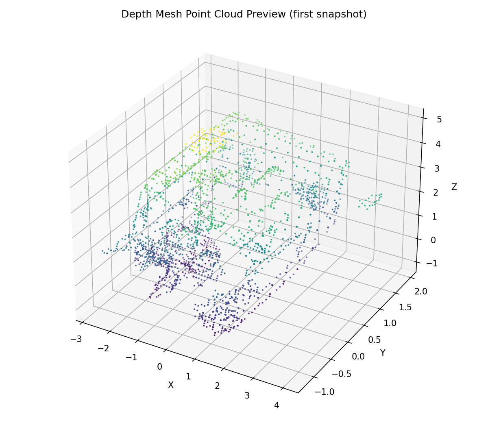
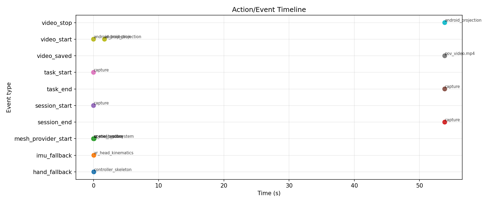
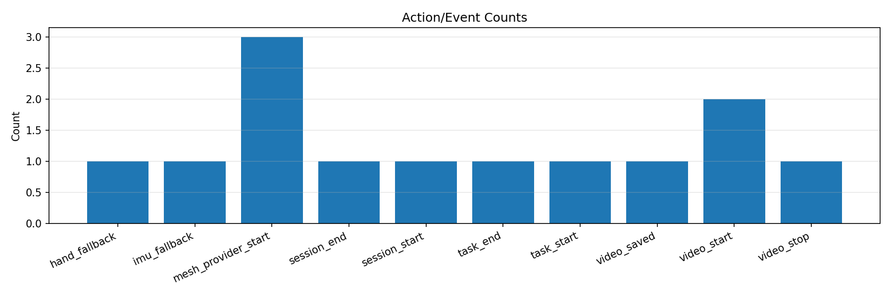
{
"session_id": "20260302_151416_capture",
"task_type": "capture",
"scenario_category": "general",
"total_frames": 1305,
"duration_s": 53.874,
"actual_fps": 24.22,
"target_fps": 30,
"start_unix_s": 1772464456.327,
"end_unix_s": 1772464510.232
}
{
"session_id": "20260302_151416_capture",
"task_type": "capture",
"scenario_category": "general",
"capture_start_utc": "2026-03-02T15:14:16.3284790Z",
"capture_start_unix_s": 1772464456.327,
"sample_rate_hz": 30,
"device": {
"model": "Pico A92Y0",
"os": "Android OS 14 / API-34 (UKQ1.240321.001/20)"
},
"coordinate_system": {
"convention": "Unity left-handed Y-up",
"units": "meters",
"rotation_format": "quaternion (x,y,z,w)",
"origin": "XR tracking origin (floor)",
"axes": {
"x": "right",
"y": "up",
"z": "forward"
}
},
"camera_intrinsics": {
"note": "PICO 4 Ultra: 2x32MP stereo RGB. Spatial video output 2048x1536@60fps.",
"sensor_resolution": [
3264,
2448
],
"output_resolution": [
2048,
1536
],
"stereo_baseline_mm": 64,
"hfov_deg_approx": 100,
"approx_fx": 860,
"approx_fy": 860,
"approx_cx": 1024,
"approx_cy": 768,
"calibration_note": "Run checkerboard calibration for precise fx/fy/cx/cy per device."
},
"extrinsics": {
"note": "Cameras rigidly mounted on HMD. Extrinsics = fixed offset from HMD tracking center.",
"reference": "HMD tracking origin"
},
"depth_sensor": {
"type": "iToF",
"fov_deg": 60,
"range_m": 3.0,
"access": "spatial_mesh"
},
"hand_tracking": {
"joints_per_hand": 26,
"model": "OpenXR XR_EXT_hand_tracking",
"per_joint": [
"position_xyz_m",
"orientation_quat",
"radius_m"
],
"joint_names": [
"Palm",
"Wrist",
"ThumbMeta",
"ThumbProx",
"ThumbDist",
"ThumbTip",
"IndexMeta",
"IndexProx",
"IndexInter",
"IndexDist",
"IndexTip",
"MiddleMeta",
"MiddleProx",
"MiddleInter",
"MiddleDist",
"MiddleTip",
"RingMeta",
"RingProx",
"RingInter",
"RingDist",
"RingTip",
"LittleMeta",
"LittleProx",
"LittleInter",
"LittleDist",
"LittleTip"
]
},
"body_tracking": {
"joints": 24,
"model": "PICO BodyTrackerResult",
"per_joint": [
"position_xyz_m",
"orientation_quat",
"confidence"
],
"joint_names": [
"Pelvis",
"LeftHip",
"RightHip",
"Spine1",
"LeftKnee",
"RightKnee",
"Spine2",
"LeftAnkle",
"RightAnkle",
"Spine3",
"LeftFoot",
"RightFoot",
"Neck",
"LeftCollar",
"RightCollar",
"Head",
"LeftShoulder",
"RightShoulder",
"LeftElbow",
"RightElbow",
"LeftWrist",
"RightWrist",
"LeftHand",
"RightHand"
],
"output_file": "body_pose.csv"
},
"imu": {
"location": "HMD",
"accel_unit": "m/s^2",
"gyro_unit": "rad/s",
"source": "auto_multi_source"
},
"sync": {
"method": "clap_gesture + audio_beep + wallclock",
"sensor_epoch_realtime": 15.626304,
"sensor_epoch_unix_s": 1772464456.327,
"note": "Find sync_clap events in action_log.csv. Audio beep in video for alignment."
}
}
| ts_s | frame | accel_x | accel_y | accel_z | gyro_x | gyro_y | gyro_z |
|---|---|---|---|---|---|---|---|
| 0.048722 | 0 | 0.000000 | 0.000000 | 0.000000 | -0.021472 | 0.005011 | 0.032269 |
| 0.092407 | 1 | -0.039077 | 0.055982 | 0.129831 | -0.012297 | -0.006705 | 0.032875 |
| 0.135656 | 2 | -0.063002 | -0.229603 | 0.050332 | 0.008631 | -0.025711 | 0.031542 |
| 0.179282 | 3 | -0.067078 | -0.006247 | 0.065710 | 0.050830 | -0.054095 | 0.031530 |
| 0.213520 | 4 | -0.044943 | -0.060681 | -0.034549 | 0.057499 | -0.084442 | 0.023563 |
| 0.248945 | 5 | 0.016904 | -0.045577 | -0.095228 | 0.075343 | -0.096159 | 0.009692 |
| 0.289546 | 6 | 0.194563 | 0.310763 | -0.182979 | 0.050154 | -0.071379 | 0.016239 |
| 0.334698 | 7 | 0.075739 | -0.033432 | -0.151057 | 0.015799 | -0.004977 | -0.014266 |
| 0.369088 | 8 | -0.008006 | 0.114046 | 0.029864 | 0.009314 | 0.026084 | 0.013042 |
| 0.412238 | 9 | 0.000173 | -0.038498 | 0.015329 | -0.012186 | 0.028049 | 0.028055 |
| 0.456447 | 10 | -0.055377 | 0.077931 | 0.080633 | -0.011254 | 0.026742 | 0.014616 |
| 0.500759 | 11 | -0.156638 | -0.220981 | 0.074153 | -0.012551 | -0.000710 | -0.014001 |
| 0.535227 | 12 | -0.146884 | 0.028143 | 0.110305 | 0.005559 | -0.026796 | -0.015877 |
| 0.578842 | 13 | -0.133898 | 0.123507 | 0.072220 | 0.012460 | -0.054080 | 0.011276 |
| 0.613217 | 14 | -0.090206 | -0.072251 | -0.008422 | 0.016466 | -0.085626 | 0.040182 |
| 0.656715 | 15 | 0.004497 | -0.071678 | -0.136522 | 0.032834 | -0.101059 | 0.023282 |
| 0.690050 | 16 | 0.048342 | 0.199610 | -0.108883 | 0.026465 | -0.094800 | 0.042589 |
| 0.725945 | 17 | 0.046874 | 0.102480 | -0.080520 | 0.007122 | -0.092181 | 0.041378 |
| 0.767723 | 18 | 0.085476 | 0.182971 | -0.068998 | -0.039883 | -0.068948 | 0.019758 |
| 0.801487 | 19 | -0.016590 | 0.086437 | 0.060778 | -0.078232 | -0.055926 | 0.014912 |
| ts_s | frame | pos_x | pos_y | pos_z | rot_x | rot_y | rot_z | rot_w | tracking_state |
|---|---|---|---|---|---|---|---|---|---|
| 0.048722 | 0 | -0.024288 | -0.005761 | 0.015282 | 0.028680 | 0.167838 | -0.023087 | 0.985127 | 15 |
| 0.092407 | 1 | -0.024402 | -0.005635 | 0.015427 | 0.028624 | 0.167658 | -0.022418 | 0.985175 | 15 |
| 0.135656 | 2 | -0.024574 | -0.005798 | 0.015619 | 0.028963 | 0.166974 | -0.021752 | 0.985296 | 15 |
| 0.179282 | 3 | -0.024848 | -0.005954 | 0.015869 | 0.030537 | 0.165581 | -0.021449 | 0.985490 | 15 |
| 0.213520 | 4 | -0.025099 | -0.006139 | 0.016018 | 0.031559 | 0.163867 | -0.021330 | 0.985747 | 15 |
| 0.248945 | 5 | -0.025337 | -0.006305 | 0.016106 | 0.032949 | 0.162136 | -0.021583 | 0.985982 | 15 |
| 0.289546 | 6 | -0.025426 | -0.006274 | 0.016049 | 0.034045 | 0.160639 | -0.021457 | 0.986193 | 15 |
| 0.334698 | 7 | -0.025515 | -0.006251 | 0.016028 | 0.033964 | 0.161043 | -0.021916 | 0.986119 | 15 |
| 0.369088 | 8 | -0.025553 | -0.006176 | 0.016000 | 0.034148 | 0.161802 | -0.021528 | 0.985997 | 15 |
| 0.412238 | 9 | -0.025555 | -0.006126 | 0.015929 | 0.033908 | 0.162429 | -0.020547 | 0.985924 | 15 |
| 0.456447 | 10 | -0.025619 | -0.005999 | 0.015994 | 0.033845 | 0.163087 | -0.020251 | 0.985823 | 15 |
| 0.500759 | 11 | -0.025927 | -0.006075 | 0.016116 | 0.033308 | 0.162945 | -0.020782 | 0.985854 | 15 |
| 0.535227 | 12 | -0.026317 | -0.006092 | 0.016261 | 0.033545 | 0.162250 | -0.021140 | 0.985953 | 15 |
| 0.578842 | 13 | -0.026987 | -0.006030 | 0.016473 | 0.033867 | 0.160875 | -0.021026 | 0.986170 | 15 |
| 0.613217 | 14 | -0.027534 | -0.006098 | 0.016582 | 0.034294 | 0.159123 | -0.020177 | 0.986457 | 15 |
| 0.656715 | 15 | -0.028273 | -0.006235 | 0.016539 | 0.035139 | 0.156713 | -0.019985 | 0.986817 | 15 |
| 0.690050 | 16 | -0.028776 | -0.006208 | 0.016405 | 0.035640 | 0.155165 | -0.019265 | 0.987057 | 15 |
| 0.725945 | 17 | -0.029246 | -0.006126 | 0.016154 | 0.035709 | 0.153627 | -0.018585 | 0.987309 | 15 |
| 0.767723 | 18 | -0.029863 | -0.005852 | 0.015805 | 0.034546 | 0.152242 | -0.018195 | 0.987572 | 15 |
| 0.801487 | 19 | -0.030346 | -0.005532 | 0.015629 | 0.032878 | 0.151499 | -0.017763 | 0.987751 | 15 |
| ts_s | frame | hand | joint_id | joint_name | pos_x | pos_y | pos_z | rot_x | rot_y | rot_z | rot_w | radius |
|---|---|---|---|---|---|---|---|---|---|---|---|---|
| 0.048722 | 0 | left | 1 | Wrist | -0.640373 | -0.586852 | 0.227190 | -0.003239 | -0.389235 | -0.435959 | 0.811434 | 0.0200 |
| 0.048722 | 0 | left | 0 | Palm | -0.662383 | -0.574790 | 0.251584 | -0.003239 | -0.389235 | -0.435959 | 0.811434 | 0.0240 |
| 0.048722 | 0 | left | 2 | ThumbMeta | -0.680705 | -0.553721 | 0.227490 | -0.003239 | -0.389235 | -0.435959 | 0.811434 | 0.0160 |
| 0.048722 | 0 | left | 3 | ThumbProx | -0.692574 | -0.544232 | 0.235110 | -0.003239 | -0.389235 | -0.435959 | 0.811434 | 0.0140 |
| 0.048722 | 0 | left | 4 | ThumbDist | -0.703048 | -0.535860 | 0.241833 | -0.003239 | -0.389235 | -0.435959 | 0.811434 | 0.0120 |
| 0.048722 | 0 | left | 5 | ThumbTip | -0.712125 | -0.528603 | 0.247660 | -0.003239 | -0.389235 | -0.435959 | 0.811434 | 0.0100 |
| 0.048722 | 0 | left | 6 | IndexMeta | -0.678500 | -0.556819 | 0.252496 | -0.003239 | -0.389235 | -0.435959 | 0.811434 | 0.0160 |
| 0.048722 | 0 | left | 7 | IndexProx | -0.690141 | -0.549867 | 0.264335 | -0.003239 | -0.389235 | -0.435959 | 0.811434 | 0.0140 |
| 0.048722 | 0 | left | 8 | IndexInter | -0.700488 | -0.543687 | 0.274858 | -0.003239 | -0.389235 | -0.435959 | 0.811434 | 0.0120 |
| 0.048722 | 0 | left | 9 | IndexDist | -0.709542 | -0.538279 | 0.284066 | -0.003239 | -0.389235 | -0.435959 | 0.811434 | 0.0100 |
| 0.048722 | 0 | left | 10 | IndexTip | -0.717303 | -0.533644 | 0.291959 | -0.003239 | -0.389235 | -0.435959 | 0.811434 | 0.0080 |
| 0.048722 | 0 | left | 11 | MiddleMeta | -0.676218 | -0.567208 | 0.266918 | -0.003239 | -0.389235 | -0.435959 | 0.811434 | 0.0160 |
| 0.048722 | 0 | left | 12 | MiddleProx | -0.688166 | -0.560660 | 0.280160 | -0.003239 | -0.389235 | -0.435959 | 0.811434 | 0.0140 |
| 0.048722 | 0 | left | 13 | MiddleInter | -0.698856 | -0.554801 | 0.292009 | -0.003239 | -0.389235 | -0.435959 | 0.811434 | 0.0120 |
| 0.048722 | 0 | left | 14 | MiddleDist | -0.708289 | -0.549631 | 0.302463 | -0.003239 | -0.389235 | -0.435959 | 0.811434 | 0.0100 |
| 0.048722 | 0 | left | 15 | MiddleTip | -0.716464 | -0.545151 | 0.311524 | -0.003239 | -0.389235 | -0.435959 | 0.811434 | 0.0080 |
| 0.048722 | 0 | left | 16 | RingMeta | -0.668600 | -0.579909 | 0.274294 | -0.003239 | -0.389235 | -0.435959 | 0.811434 | 0.0160 |
| 0.048722 | 0 | left | 17 | RingProx | -0.679621 | -0.574347 | 0.287395 | -0.003239 | -0.389235 | -0.435959 | 0.811434 | 0.0140 |
| 0.048722 | 0 | left | 18 | RingInter | -0.689417 | -0.569403 | 0.299039 | -0.003239 | -0.389235 | -0.435959 | 0.811434 | 0.0120 |
| 0.048722 | 0 | left | 19 | RingDist | -0.697988 | -0.565077 | 0.309228 | -0.003239 | -0.389235 | -0.435959 | 0.811434 | 0.0100 |
| ts_s | frame | joint_id | joint_name | pos_x | pos_y | pos_z | rot_x | rot_y | rot_z | rot_w | confidence |
|---|---|---|---|---|---|---|---|---|---|---|---|
| 0.048722 | 1 | 0 | Pelvis | -0.054602 | -0.554270 | -0.011534 | 0.028680 | 0.167838 | -0.023087 | 0.985127 | 0.500 |
| 0.048722 | 1 | 15 | Head | -0.024288 | -0.005761 | 0.015282 | 0.028680 | 0.167838 | -0.023087 | 0.985127 | 0.950 |
| 0.048722 | 1 | 16 | LeftShoulder | -0.186761 | -0.160516 | 0.082763 | 0.028680 | 0.167838 | -0.023087 | 0.985127 | 0.620 |
| 0.048722 | 1 | 17 | RightShoulder | 0.133722 | -0.172709 | -0.030120 | 0.028680 | 0.167838 | -0.023087 | 0.985127 | 0.620 |
| 0.048722 | 1 | 18 | LeftElbow | -0.413567 | -0.373684 | 0.154976 | -0.003239 | -0.389235 | -0.435959 | 0.811434 | 0.580 |
| 0.048722 | 1 | 19 | RightElbow | 0.122728 | -0.226649 | 0.117261 | -0.607854 | -0.054873 | -0.004132 | 0.792140 | 0.580 |
| 0.048722 | 1 | 20 | LeftWrist | -0.640373 | -0.586852 | 0.227190 | -0.003239 | -0.389235 | -0.435959 | 0.811434 | 0.820 |
| 0.048722 | 1 | 21 | RightWrist | 0.111734 | -0.280590 | 0.264643 | -0.607854 | -0.054873 | -0.004132 | 0.792140 | 0.820 |
| 0.048722 | 1 | 22 | LeftHand | -0.640373 | -0.586852 | 0.227190 | -0.003239 | -0.389235 | -0.435959 | 0.811434 | 0.780 |
| 0.048722 | 1 | 23 | RightHand | 0.111734 | -0.280590 | 0.264643 | -0.607854 | -0.054873 | -0.004132 | 0.792140 | 0.780 |
| 0.092407 | 2 | 0 | Pelvis | -0.053975 | -0.554181 | -0.011458 | 0.028624 | 0.167658 | -0.022418 | 0.985175 | 0.500 |
| 0.092407 | 2 | 15 | Head | -0.024402 | -0.005635 | 0.015427 | 0.028624 | 0.167658 | -0.022418 | 0.985175 | 0.950 |
| 0.092407 | 2 | 16 | LeftShoulder | -0.186696 | -0.160612 | 0.082825 | 0.028624 | 0.167658 | -0.022418 | 0.985175 | 0.620 |
| 0.092407 | 2 | 17 | RightShoulder | 0.133848 | -0.172367 | -0.029928 | 0.028624 | 0.167658 | -0.022418 | 0.985175 | 0.620 |
| 0.092407 | 2 | 18 | LeftElbow | -0.413540 | -0.373738 | 0.154998 | -0.003387 | -0.389121 | -0.435990 | 0.811471 | 0.580 |
| 0.092407 | 2 | 19 | RightElbow | 0.124628 | -0.226857 | 0.117055 | -0.608147 | -0.043984 | -0.006702 | 0.792577 | 0.580 |
| 0.092407 | 2 | 20 | LeftWrist | -0.640384 | -0.586864 | 0.227170 | -0.003387 | -0.389121 | -0.435990 | 0.811471 | 0.820 |
| 0.092407 | 2 | 21 | RightWrist | 0.115409 | -0.281346 | 0.264038 | -0.608147 | -0.043984 | -0.006702 | 0.792577 | 0.820 |
| 0.092407 | 2 | 22 | LeftHand | -0.640384 | -0.586864 | 0.227170 | -0.003387 | -0.389121 | -0.435990 | 0.811471 | 0.780 |
| 0.092407 | 2 | 23 | RightHand | 0.115409 | -0.281346 | 0.264038 | -0.608147 | -0.043984 | -0.006702 | 0.792577 | 0.780 |
| ts_s | frame | snapshot | filename | verts | tris |
|---|---|---|---|---|---|
| 0.990483 | 25 | 0 | mesh_0000.ply | 4237 | 3570 |
| 1.998297 | 46 | 1 | mesh_0001.ply | 4237 | 3570 |
| 1.998297 | 46 | 2 | mesh_0002.ply | 4224 | 3554 |
| 2.998828 | 70 | 3 | mesh_0003.ply | 4224 | 3554 |
| 2.998828 | 70 | 4 | mesh_0004.ply | 4226 | 3548 |
| 4.010529 | 94 | 5 | mesh_0005.ply | 4226 | 3548 |
| 4.010529 | 94 | 6 | mesh_0006.ply | 4219 | 3533 |
| 4.989572 | 118 | 7 | mesh_0007.ply | 4219 | 3533 |
| 4.989572 | 118 | 8 | mesh_0008.ply | 4243 | 3560 |
| 5.989924 | 143 | 9 | mesh_0009.ply | 4243 | 3560 |
| 5.989924 | 143 | 10 | mesh_0010.ply | 4269 | 3580 |
| 7.012563 | 168 | 11 | mesh_0011.ply | 4269 | 3580 |
| 7.012563 | 168 | 12 | mesh_0012.ply | 4335 | 3639 |
| 7.991599 | 192 | 13 | mesh_0013.ply | 4335 | 3639 |
| 7.991599 | 192 | 14 | mesh_0014.ply | 4293 | 3595 |
| 8.992596 | 215 | 15 | mesh_0015.ply | 4293 | 3595 |
| 8.992596 | 215 | 16 | mesh_0016.ply | 4345 | 3643 |
| 10.026203 | 240 | 17 | mesh_0017.ply | 4345 | 3643 |
| 10.026203 | 240 | 18 | mesh_0018.ply | 4295 | 3601 |
| 11.014789 | 265 | 19 | mesh_0019.ply | 4295 | 3601 |
| ts_s | frame | event_type | action_type | metadata |
|---|---|---|---|---|
| 0.000000 | 0 | session_start | capture | scenario=general |
| 0.000000 | 0 | mesh_provider_start | xr_mesh_subsystem | ok |
| 0.000000 | 0 | task_start | capture | user_initiated |
| 0.000000 | 0 | video_start | android_projection | pending |
| 0.048722 | 0 | hand_fallback | controller_skeleton | xr_hand_data_unavailable |
| 0.048722 | 0 | imu_fallback | xr_head_kinematics | native_or_gyro_unavailable |
| 0.048722 | 1 | mesh_provider_start | spatial_anchor | ok |
| 0.092407 | 2 | mesh_provider_start | scene_capture | ok |
| 1.683791 | 38 | video_start | android_projection | ok |
| 53.873941 | 1305 | task_end | capture | user_initiated |
| 53.873941 | 1305 | video_stop | android_projection | ok |
| 53.873941 | 1305 | video_saved | pov_video.mp4 | src=/storage/emulated/0/Android/data/com.sentientx.datacapture/files/dataset_capture/20260302_151416_capture/pov_video.mp4 |
| 53.873941 | 1305 | session_end | capture | frames=1305 |